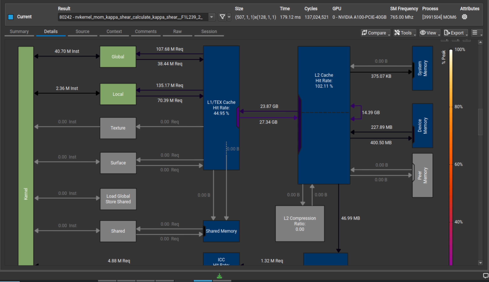
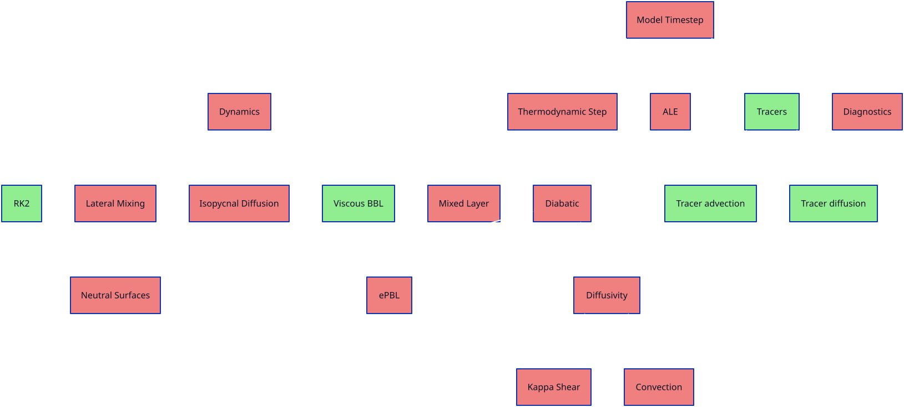
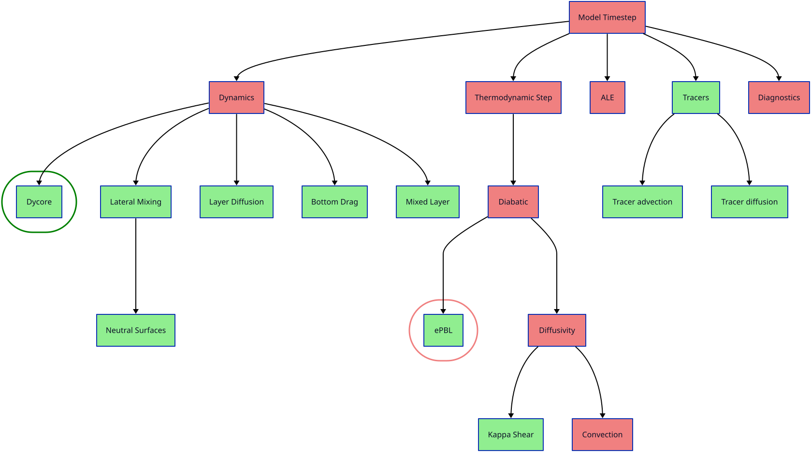

Ocean's 4
Princeton Open
Hackathon 2026
Team Members

Ed Yang
ACCESS-NRI |

Utheri Wagura
NOAA-GFDL |
Marshall Ward
NOAA-GFDL |

Jorge Galvez Vallejo
NCI Australia |
|
Stéphane Ethier
PPPL |
Mat Colgrove
NVIDIA |
Pranay Reddy Kommera
NVIDIA |
Yifei Wu
NVIDIA |
Algorithmic Motif
Problem the team is trying to solve.
Scientific driver for the chosen algorithm.
What’s the algorithmic motif?
What parts are you focusing on?
Evolution and Strategy
- What was your goal coming here?
-
Port the most difficult MOM6 subroutines
- What was your initial strategy?
-
Get anything working, then iterate on perfomrance
- How did this strategy change?
-
Overall worked as expected
Background
| Programming Language |
Fortran |
| GPU Programming Model/Framework/Libraries |
OpenMP, OpenACC (do concurrent) |
| GPU types used, cluster config |
A100, GH200 |
| How many GPUs? |
1 |
Energetic PBL
| Initial port |
9 sec |
| Eliminate 3d->1d copies |
4.5 sec |
| Replace auto arrays |
~200 msec |
| Aggressive Inlining |
(?) |
do concurrent |
2.4 msec |
~3800x improvement
Kappa Shear Fixed

Porting Coverage

Porting Coverage

Was it worth it?
- We ported our most difficult kernels
-
- energetic PBL
- kappa shear
- Dramatic increase in coverage
- Invaluable insights on compiler internals
- Shared several compiler bug reports
Overall an invaluable experience